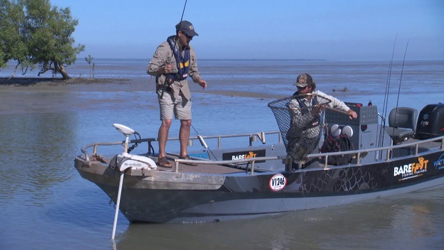
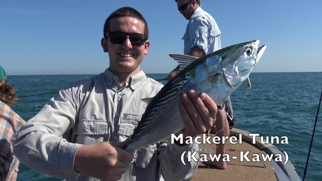
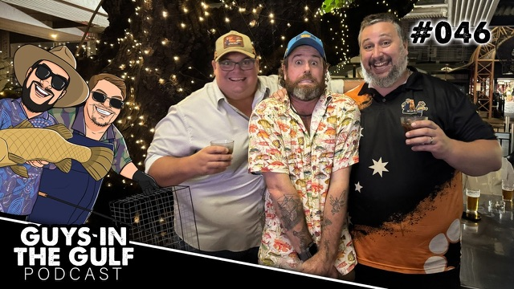

Media Centre
Watty, on the record
The podcast, the sessions, the radio spots — and everything he knows about barra.
Media Centre
The podcast, the sessions, the radio spots — and everything he knows about barra.
The library
Radio segments, podcast appearances and the long-form stuff Watty teaches on the water — every one of them transcribed in full. Filter it however suits.

The framework Watty uses to plan every session — Where & When, Wind & Weather, Time & Tide, Techniques & Tactics.
Read the article →
A season-by-season guide — run-off, dry and build-up — and how to pick the trip that suits you.
Read the guide →
The one-page planner Watty uses to line up the best sessions of the year — tides, seasons and timing at a glance.
Grab it free →
Watty’s weekly Bag a Barra segment on Oz Off Road Radio — 228 of them, back to 2019, every one with a full transcript.
Browse the archive →
The Fishing on Arvos spots with Liz Trevaskis on ABC Radio Darwin — audio and full transcripts.
Listen & read →Every radio segment is transcribed in full — browse the whole archive.
Watch
Sessions and appearances filmed by Starlo, Peachy and a few others. Used with each channel’s permission — if you like what you see, go and subscribe to them.






More on the Barefoot channel.
As seen & heard on


The rest of it you learn standing on the bow with someone who's been doing it since 2011.